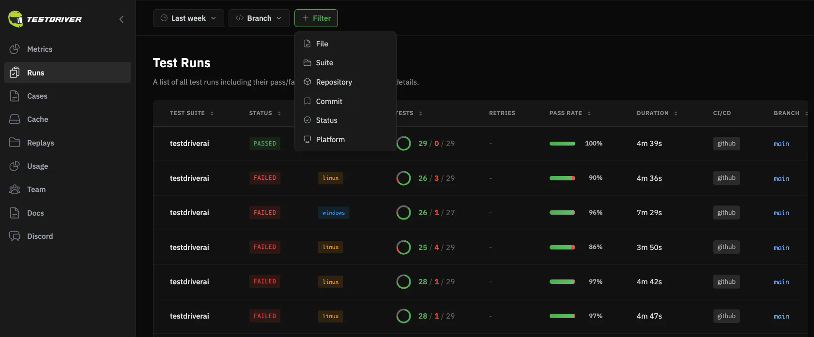
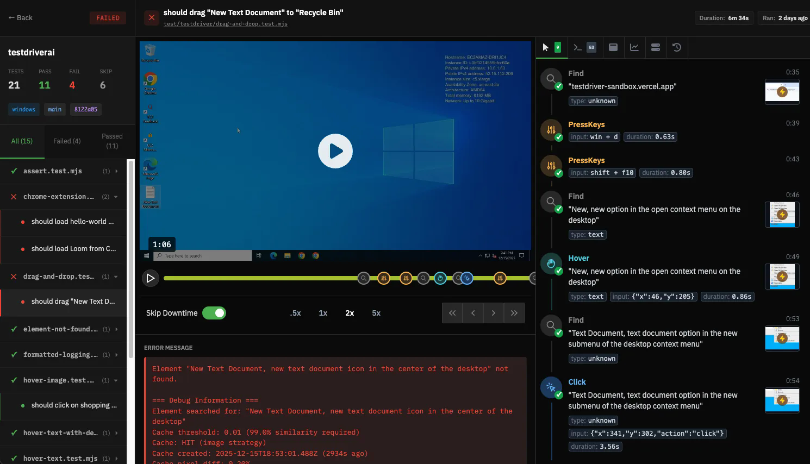
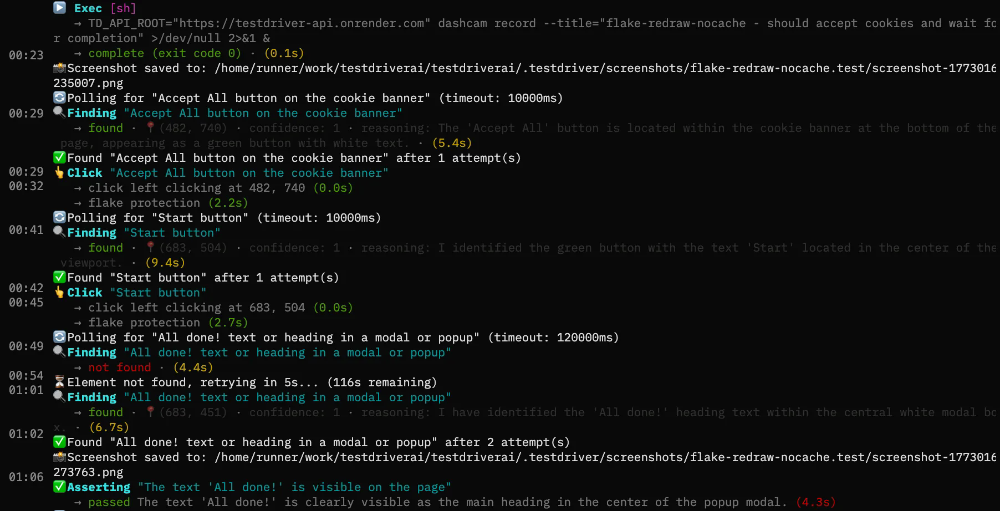
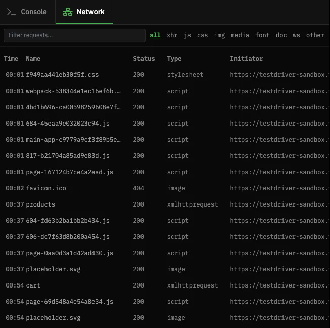
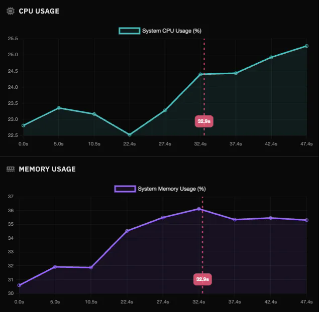
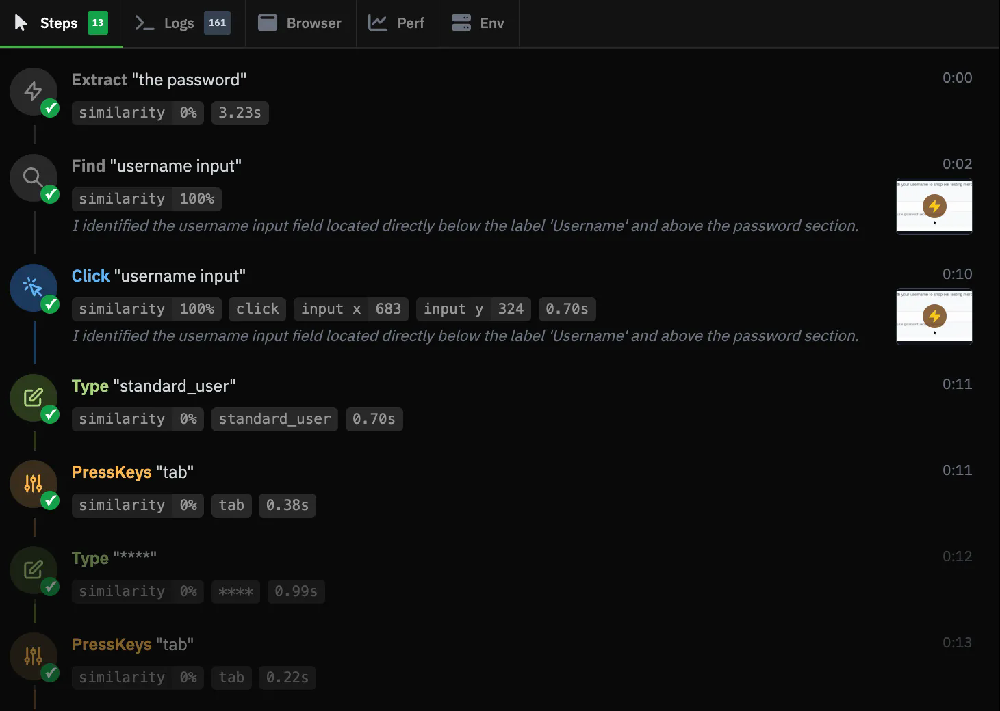
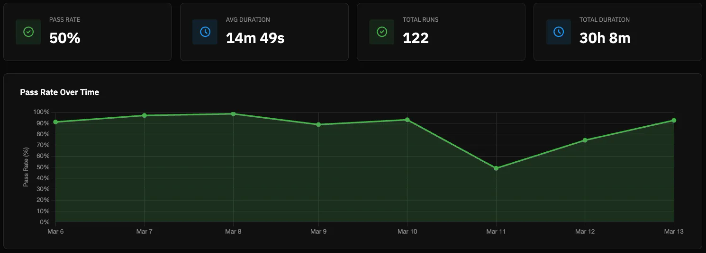

TestDriver — 機能・導線・画面
確認日：2026年10月27日。全体比較・画面／動画ギャラリー
調査範囲
現在のDocsはVitestベースのcomputer-useテスト。旧YAML quickstartと混同しない。製品の実行履歴・replay・診断パネル画像を収録。
比較上の位置：開発工程・デスクトップ検証の直接比較。追加理由：実desktop sandboxでPRを確かめ、拡張機能・ネイティブアプリも扱うため。
公式UI画像と現行Docs。CLI・VM起動・PRレビューは実行していない。トップの装飾動画は製品操作の証拠として保存しない。
作業の流れ
GitHub／IDE／MCP → PR内容・目的 → desktop VM → 視覚操作とassertion → replay・network・action log → 生成testのPR → CI・回帰
機能の構成
Test Runs、Replay、Logs、Network、CPU & Memory、Interactions、Metrics。開発入口はGitHub・Claude・VS Code／Cursor・MCP・手動project。
下表は公開説明・文書の要約。実操作した範囲は画面一覧と調査範囲に限定し、表全体を実機検証済みとはしない。
| 段階 | 画面・機能 | 入力・操作と次の行動 |
|---|---|---|
| 入力 | GitHub・IDE・MCP | PRや自然言語の目的から確認を始める。 |
| 環境 | Hosted／Self-hosted | 実デスクトップのsandboxを対象にする。契約ごとのOS・環境条件は別確認。 |
| 作成 | Vitest tests | 視覚的に対象を探し、click・入力・assertionを行うテストを作る。 |
| 実行 | VM・live preview | Web、desktop、browser／VS Code拡張等の操作を案内。 |
| 再現 | Replay・screenshots | 失敗Runの録画とstepごとの画面を見て原因を追う。 |
| 診断 | Network・resource・action log | 通信詳細、CPU／memory、操作順を結果に結び付ける。 |
| 保守 | Cacheと再探索 | 対象が移動した際にAIで再探索する説明。意味の保持は未検証。 |
| 継続 | テストPR・CI・Metrics | 生成コードをPRにし、再実行と傾向を管理する。 |
人の担当と比較上の着眼点
対象・準備・期待の指定、Agentの操作権限、テストPRと失敗原因を判断する。
調査者の解釈：DOMだけで扱えないdesktop・拡張機能と、失敗から通信・操作を追う診断が比較点。 製品性能の優劣を実証した結論ではない。
動画と見る場面
製品操作を確認できる動画を今回保存できていない。存在しない・非対応という意味ではない。問い合わせ画面で代用しない。
画面一覧
| 画面 | 種別 | 出典 |
|---|---|---|
 List of test runs |
official-ui-image | 掲載元 |
 Video replay of a failed run |
official-ui-image | 掲載元 |
 Test logs viewer |
official-ui-image | 掲載元 |
 Request information panel |
official-ui-image | 掲載元 |
 CPU and memory metrics |
official-ui-image | 掲載元 |
 Action log timeline |
official-ui-image | 掲載元 |
 Regression and quality trends dashboard |
official-ui-image | 掲載元 |